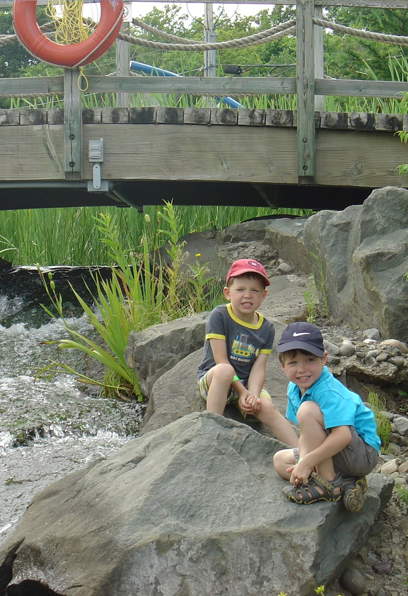
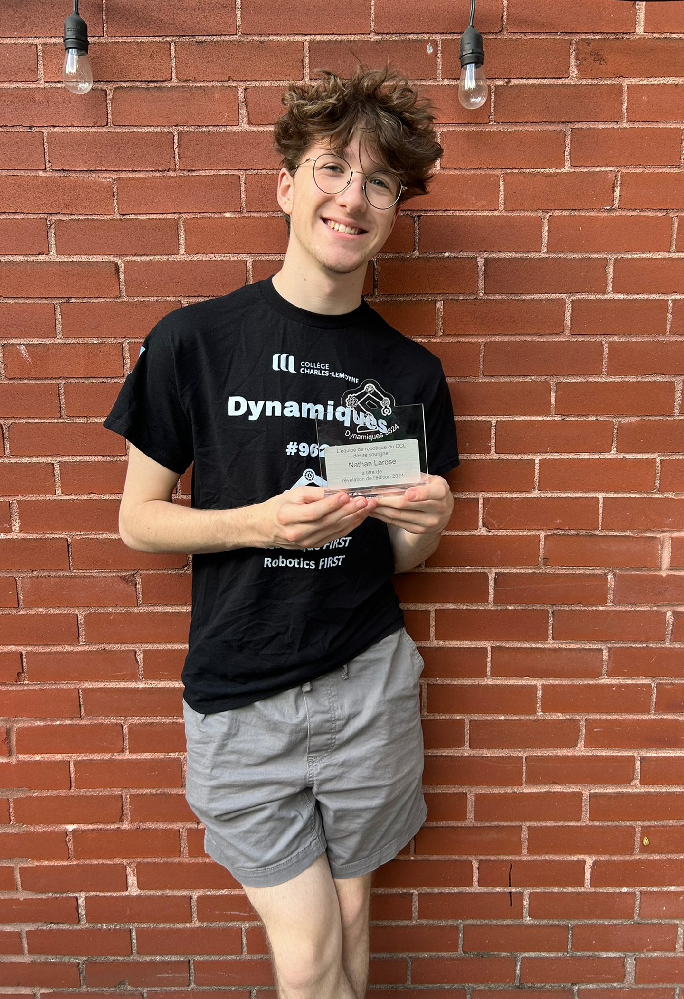
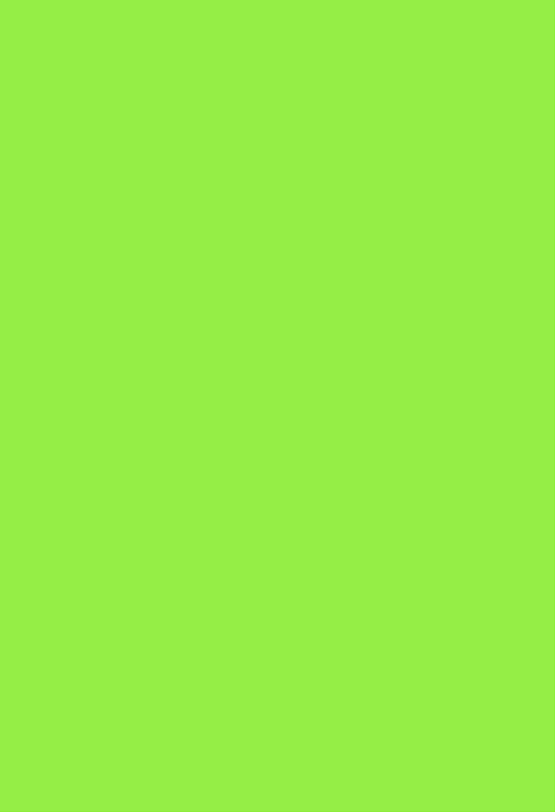
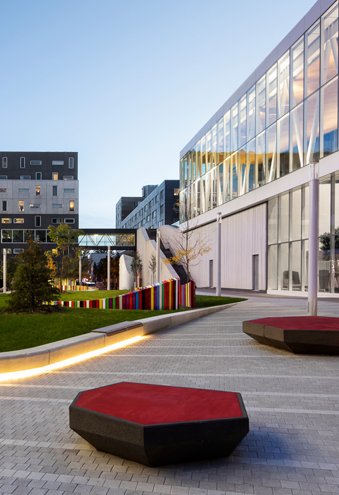
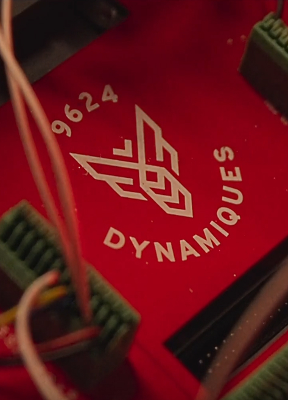

Nathan
Larose
Recherche de stage en desing UX
Designer d’exprériances et d’interfaces spécialisé dans le web

Recherche de stage en desing UX
Designer d’exprériances et d’interfaces spécialisé dans le web
Je maîtrise différents outils et langages pour créer des expériences numériques.
nombre
outils
niveau
en gros
Création et modélisation d’objets et environnements 3D.
Adaptation des interfaces aux différentes tailles d’écran.
Conception de maquettes et prototypes interactifs.
Création d’animations et d’effets visuels.
Structuration du contenu des pages web.
Mise en forme et personnalisation visuelle des sites web.
Programmation d’interactions et de fonctionnalités web.
Mon parcours m’a progressivement mené vers le design numérique, en passant par le secondaire, le TIM, la robotique et différents projets créatifs.


Ma naissance, le point de départ de mon parcours.

Je découvre ma passion pour le web et le design.
Je termine mon secondaire et je fais mon début au cégep.

Développement de mes compétences en web, design UX/UI et multimédia.

Je développe mon portfolio et j'explore de nouvelles possibilités en UX.
Je travaille avec curiosité, ouverture et collaboration. J’aime comprendre les besoins, partager mes idées et trouver des solutions créatives tout en restant organisé et adaptable.
nombre
sortes
en gros
Exprimer mes idées clairement et collaborer efficacement avec les autres.
Exprimer mes idées clairement et collaborer efficacement avec les autres.
Structurer mon travail et gérer efficacement mes priorités et mes échéances.
Prendre le temps de comprendre, apprendre et avancer sans me précipiter.
Guider un groupe, prendre des initiatives et encourager la collaboration.
Mes projets reflètent mon parcours, ma créativité et mes apprentissages en design. Découvrez davantage de mes réalisations et de mon évolution sur ma page Projets.

Développement d’image de marque et web
Développement d’image de marque et web
Développement d’image de marque et web
Ce projet a été réalisé dans le cadre de mon portfolio afin de créer une identité visuelle qui représente